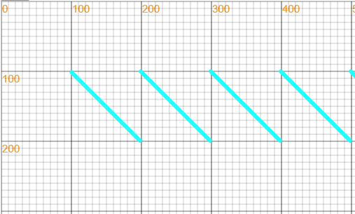
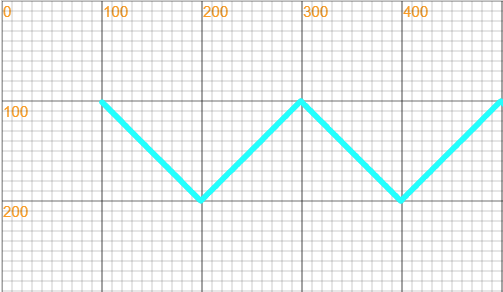
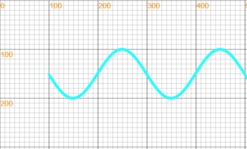

LeapLearner Canvas v0.1.16 版本更新内容¶
新增基本图形函数¶
fill(r, g, b) || fill(color)¶
修改画笔填充的颜色
stroke(r, g, b) || stroke(color)¶
修改画笔描边的颜色
rectangle(x, y, w, h)¶
rectangle(x, y, w, h): 绘制一个矩形
circle(x, y, r)¶
绘制圆
line(x1, y1, x2, y2)¶
线条
point(x, y)¶
点
polygon(x1, y1, x2, y2, x3, y3, ...)¶
多边形
triangle(x1, y1, x2, y2, x3, y3)¶
三角形
ellipse(x, y, rX, rY)¶
椭圆
text(src, x, y)¶
文本
lineWidth(thickness)¶
设置线条的粗细
新增变化数值类¶
Increase(min, max, speed)¶
数值变化类，实例依据初始化设定的值随事件发生变化，当数值达到最大时，重新回到最小值。
- speed，平均每秒钟变化的数值
- min，最小值
- max，最大值
canvas.showAxis();
var y = new Increase(100, 200, 100);
x = 100;
setInterval(function(){
point(x++, y);
}, 10);

Swing(min, max, speed)¶
- 数值变化类，实例依据初始化设定的值随事件发生变化，当数值达到最大时，开始变小。
- speed，平均每秒钟变化的数值
- min，最小值
- max，最大值

Sine(min, max, speed)¶
- 数值变化类，实例依据初始化设定的值随事件发生变化，当数值达到最大时，开始变小。按照正弦曲线进行变化。
- speed，平均每秒钟变化的数值
- min，最小值
- max，最大值
